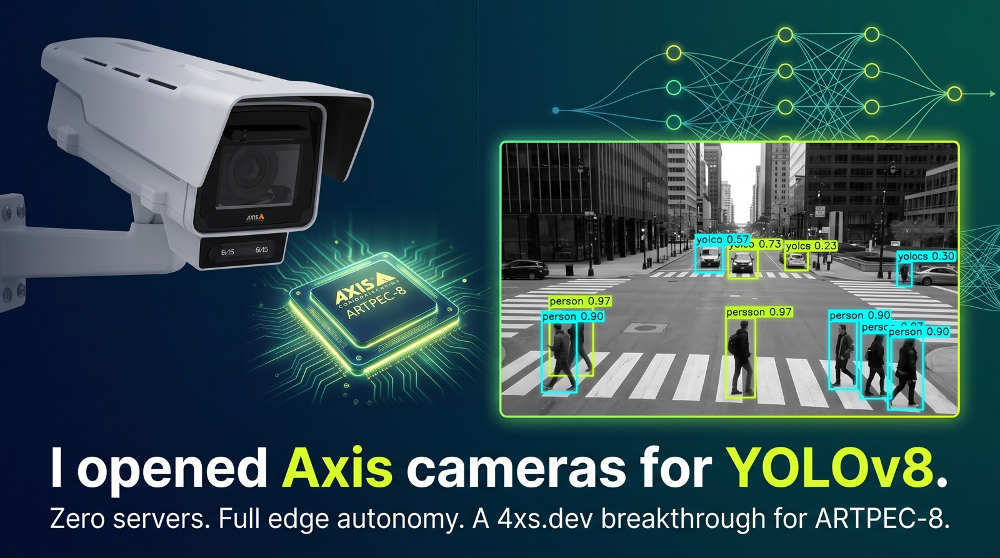

YOLOv8 on AXIS
Stock COCO YOLOv8n running on the camera's own DLPU. 80 classes, on real hardware, no server, no cloud.
01 / What it is
An ACAP that loads a quantized YOLOv8n into larod on an AXIS Q1656, decodes the detection head on the camera's own CPU, draws bounding boxes on the live stream, and publishes detections as a native Axis camera event that any VMS can subscribe to. Nothing leaves the camera.
It is a weekend project — me teaching an Axis camera a new trick, and pushing the envelope to find out where it breaks. Claude Code wrote most of the lines. The hardware, the domain judgement and the debugging are mine.
The point is the pipeline, not the class list: an arbitrary detector, quantized, running on the camera itself, with a settings UI and VMS events. Swapping in a model trained on something you actually care about is the interesting direction.
02 / What actually got measured
Numbers from the repo, not estimates. Inference figures are from the 640×640 model on an AXIS Q1656.
axis-a8-dlpu-tfliteDecoding now runs on a worker thread — frame N is decoded while frame N+1 is on the DLPU — so the loop is inference-bound. The cost is one frame of lag between video and overlay, which is not visible at these rates.
03 / The aspect-ratio finding
The result worth the weekend. larod's convert preprocessor scales the frame to
the model input without letterboxing, so a square model sees a 16:9 scene
squashed to about 56 % of its width — nothing like the photographs COCO was trained on.
Re-exported at 384×640 and scored against the float32 PyTorch model, on 28 images held out of both models' calibration sets, decoded exactly as the ACAP decodes:
| model | input | recall | false positives |
|---|---|---|---|
| square | 640×640 | 57.5 % | 19 |
| rectangular | 384×640 | 87.6 % | 11 |
| model | input | recall | false positives |
|---|---|---|---|
| square | 640×640 | 65.3 % | 16 |
| rectangular | 384×640 | 51.6 % | 9 |
Thirty points of recall, in both directions, from nothing but aspect ratio. The lesson is not that rectangular is better — it is that the model's aspect ratio has to match the sensor's, and that getting it wrong costs more than most of the tuning anyone bothers with. The rectangular model also uses 40 % fewer input pixels.
04 / The quantization trap
Worth knowing if you ever quantize a YOLOv8 yourself. Ultralytics' single
output0 concatenates box coordinates, which range 0..~650, with class scores,
which range 0..1. Per-tensor int8 quantization then picks one scale for both,
around 2.54. Every class score below ~1.27 rounds to zero, and the exported model detects
nothing at all — silently, with no error anywhere.
| export | max score |
|---|---|
| float32 reference | 0.665 |
| single-output int8 | 0.000 |
| split-output int8 | 0.625 |
The fix is to cut the graph before the final Concat so boxes and scores become
two tensors with their own quantization scales. The ACAP tells them apart by byte size rather
than index, because larod does not guarantee output order.
05 / Which cameras
The DLPU model format is not the same across Axis SoCs, so this does not travel as far as it looks.
| SoC | DLPU model format | this repo |
|---|---|---|
| ARTPEC-8 | TFLite int8 | verified — AXIS Q1656, AXIS OS 12.11 |
| ARTPEC-9 | TFLite int8 | should work, untested |
| ARTPEC-7 | TFLite int8 | untested, probably too slow |
| CV25 | Ambarella CVflow .bin | no — different toolchain |
| CV75 | proprietary, from ONNX | no |
If the device named in runOptions is absent, the app enumerates what larod
does offer, picks a DLPU, logs the substitution and carries on — so an ARTPEC-9 product should
load the same .tflite without a rebuild. That path has never run on real
ARTPEC-9 hardware. CV25 and CV75 are a port, not a flag: they take a proprietary format
converted through Ambarella's toolchain.
06 / What this is not
deepLearningProcessor.required, so AXIS Object Analytics must be stopped before
this app will start. You are trading AOA for this, not adding it.
- COCO is a photo dataset, not a surveillance dataset. It was trained on hand-held pictures, not on a camera at 4 m looking down a car park in the rain at 2 a.m. AOA is trained for that and will beat this comfortably on the classes it covers. The aspect-ratio numbers above show what a mismatch costs — and scene domain is a bigger mismatch than aspect ratio.
- Most of the 80 classes are useless on a camera. COCO includes toaster, hair drier and broccoli. Perhaps 15 of the 80 will ever fire meaningfully in a surveillance scene.
- No tracking, no scenarios, no counting, no calibration. Detections are per-frame. No line crossing, no time-in-area, no object identity across frames.
- The current model's speed is unmeasured. Only the 640×640 model has been timed on hardware. The 384×640 one should be faster; that is a prediction.
- Tested on exactly one camera — an AXIS Q1656 on AXIS OS 12.11.
07 / Get it
Needs Docker and the ACAP Native SDK image.
git clone https://github.com/kotyzap/YOLOv8-on-AXIS-ACAP
cd YOLOv8-on-AXIS-ACAP
sh acap/build.sh
curl --digest -u root:PASS -F "packfil=@acap/YOLOv8_Detector_0_9_4_aarch64.eap" \
"http://CAMERA/axis-cgi/applications/upload.cgi"Re-export the model — different input size, different calibration set, your own weights —
with sh tools/export_yolov8.sh. The build refuses to run if the committed
quantization header and the model file have drifted apart.
Read the code. It
includes improvements.md, a full code review of this repo and what came of it.
08 / Licence
AGPL-3.0, and not as a stylistic choice: this repo ships a model derived from Ultralytics YOLOv8, which is AGPL-3.0, and Ultralytics reads that as covering the whole derivative work. To build something closed on top of this you need either an Ultralytics Enterprise licence or a different model — several good detectors are Apache-2.0. I am not a lawyer and this is not legal advice.
The ACAP skeleton derives from Axis's object-detection-yolov5 example
(Apache-2.0), which is one-way compatible into AGPL-3.0.